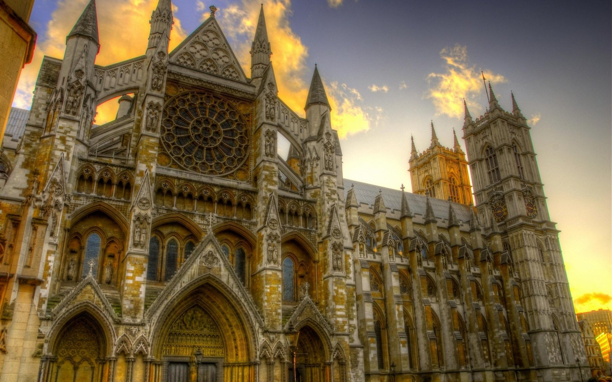
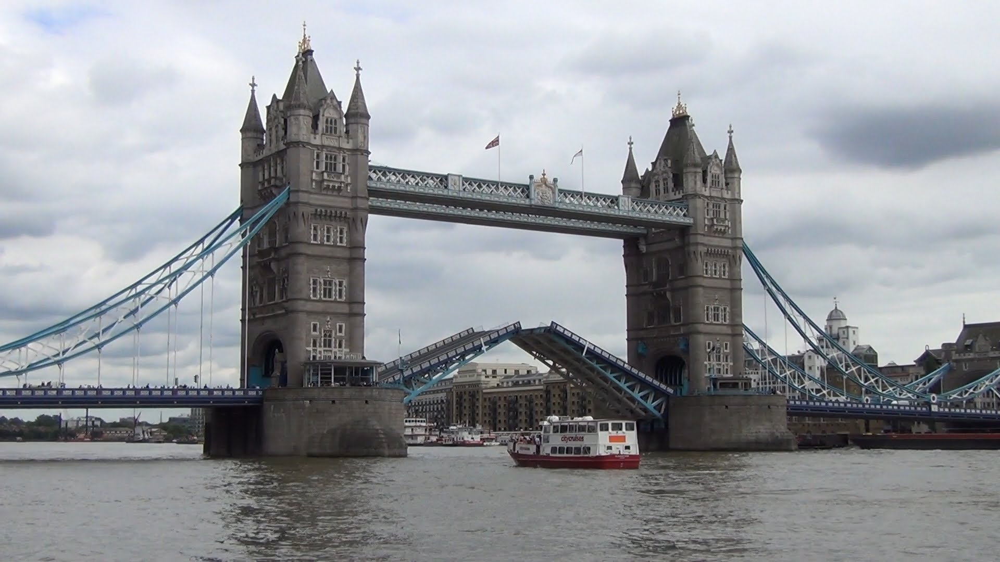
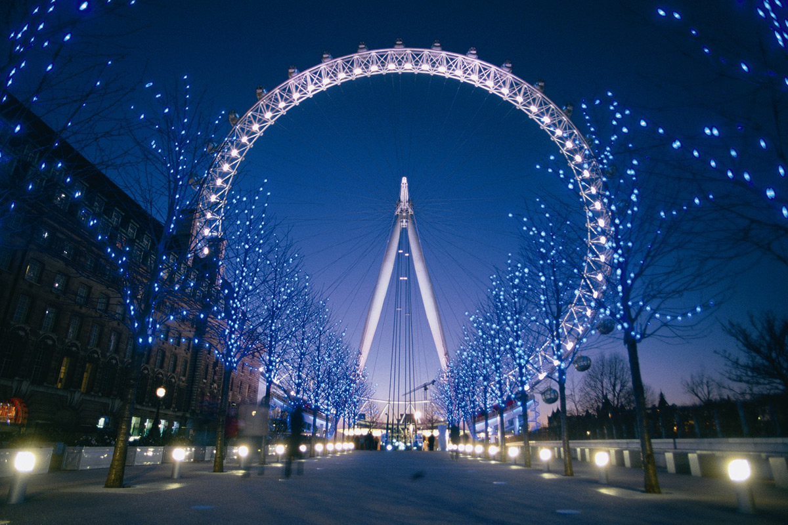

Está raro el clima
En todo el mundo
Londres (London en inglés) es la capital y mayor ciudad de Inglaterra y del Reino Unido. Situada a orillas del río Támesis, Londres es un importante asentamiento humano desde que fue fundada por los romanos con el nombre de Londinium hace casi dos milenios. El núcleo antiguo de la urbe, la ciudad de Londres, conserva básicamente su perímetro medieval de una milla cuadrada. Desde el siglo XIX el nombre «Londres» también hace referencia a toda la metrópolis desarrollada alrededor de este núcleo. En esta ciudad multirracial convive gente de un gran número de culturas que hablan más de trescientos idiomas distintos. La Autoridad del Gran Londres estima que en 2015 la ciudad tiene 8,63 millones de habitantes, una cifra que la convierte en el municipio más populoso de la Unión Europea y que supone el 12,5 % del total de habitantes del Reino Unido.
¿Qué ver y hacer en Londres?
Londres al ser una ciudad sumamente antigua cuenta con una cantidad significativa de lugares historicos que vale la pena visitar, entre los que podemos destacar
El palacio Westminster, también conocido como las Casas del Parlamento (Houses of Parliament), es un edificio gótico victoriano que alberga las dos Cámaras que componen el Parlamento Británico, la
Abadia de Westminster, el cual no sólo es el templo más antiguo de Londres, sino que tambien sede de las coronaciones, donde se acogen las tumbas de los monarcas y figuras históricas británicas de los últimos mil años. Si estás interesado en conocer más lugares interesantes para visitar en Londres, puedes ir al siguiente
link.


